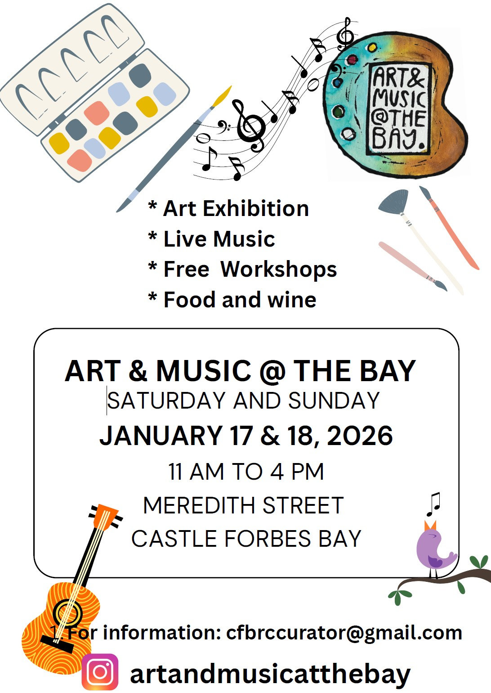

2026 Art & Music @ the Bay
ARTISTS - MUSIC - WORKSHOPS - SPONSORS - WEEKEND ACTIVITIES - VOLUNTEERS
The Castle Forbes Bay Rec Club (CFBRC) hosts a premier Community event each year in the form of 'Art & Music @ the Bay'
The event takes place on 3rd weekend in January. It is family friendly and provides an opportunity for Community groups, local businesses, residents, visitors and representatives from local and state governments to come together and enjoy, acknowledgement and appreciate the creativity and skills of our local artists and musicians. In 2025 we are extremely pleased to be partnering with Kingston and Huon FM.
The exhibition is sponsored by donations from local businesses, Community groups and individuals. The sponsors enables CFBRC to provide free entry to everyone attending the art exhibition, workshops and musical entertainment. In addition, cash prizes will be awarded to winners of the various art categories as determined by the judges and people's choice awards.
Local artists residing in the Huon Valley are encouraged to participate by entering their work into the exhibition using any media as defined by the conditions of entry. Conditions of entry and entry forms can be found here. Or by contacting the curator at cfbrccurator@gmail.com.
Interested in coming along? 17/18 January from 11 am to 4pm at the CFB Rec Club, Meredith St, CFB.
If you have any questions or would like any further information please email cfbrcinfo@gmail.com.
